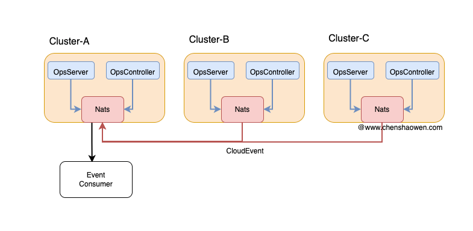

Ops
Ops 是一个运维工具项目。它的目标是提供一个简单的运维工具，让运维人员可以快速地完成运维工作。
生产实践
- 日构建 2k+ 的 CICD 集群
- 海外集群 40+ 个集群
- AI 算力集群 20+ 个集群
- 支持 ARM、X86 架构
设计

对象定义
- Host，主机。可以是云主机、裸金属机器，通过 SSH 能够访问到的机器。
- Cluster，Kubernetes 集群。通过
kubectl能够访问的 Kubernetes 集群。 - Task，组合多个 File 和 Shell 的任务。
- Pipeline，组合多个 Task 的任务。
核心操作
- File，文件的上传和下发。
- Shell，执行脚本。
组件

- ops-cli：是可以单独使用的命令行工具，辅助运维人员在命令行终端完成一些自动化的运维工作
- ops-server：一个 HTTP 服务，用于提供 HTTP API，提供有一个 Dashboard 的界面
- ops-controller：以 Operator 的形式管理主机、集群、任务、流水线等资源
多集群支持
在实践中，建议：
- 将当前集群的主机创建为 Host
- 可以创建多个 Cluster，拥有的 Cluster 对象即为纳管的集群
Task、Pipeline 对象会自动同步到集群下的全部 Cluster 集群中，无需人工触发。
当下发一个流水线任务时，需要创建一个 PipelineRun 对象。PipelineRun 是可以跨集群的，而 TaskRun 不行。
Controller 会根据 PipelineRun 中设置的 cluster 字段，将 PipelineRun 分发到指定的集群中，由集群内的 Controller 执行具体的任务，再将 PipelineRun 的状态更新到主集群内的 PipelineRun 对象中。
事件驱动

建议在每个集群中安装一个 Nats 组件，通过边缘集群的模式，可以将全部的事件汇总到一个集群，或者若干个网络分区的集群。
在事件中，主要定义了以下 Topic:
- 探活类：每个主机、集群会有定时检测，能够看到探活的事件
- 执行任务类：执行 TaskRun、PipelineRun 任务的事件
- 巡检类：TaskRun 执行定时任务巡检任务时，会推送相关的检测事件
- Webhook 类：用户自定义的一些运维事件，告警、通知等